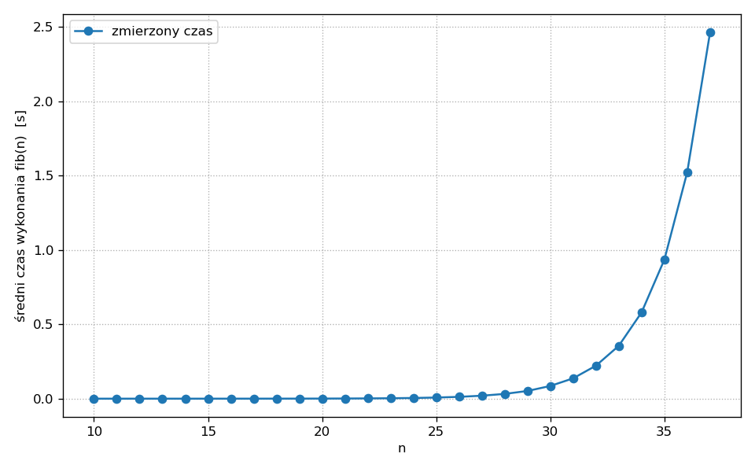
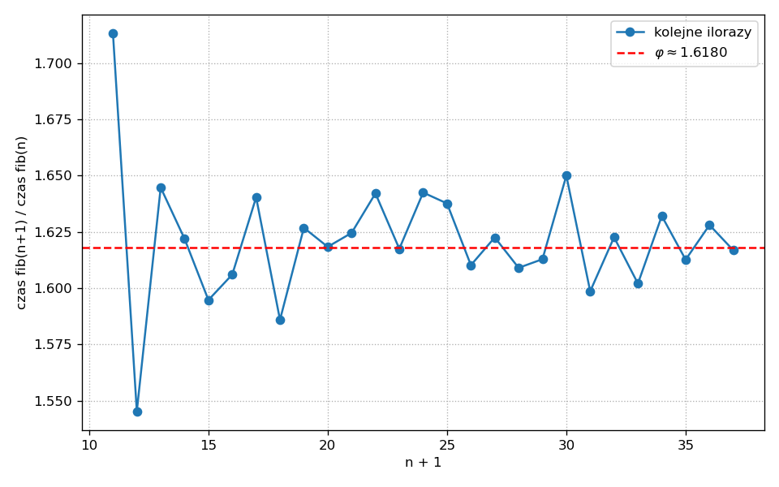
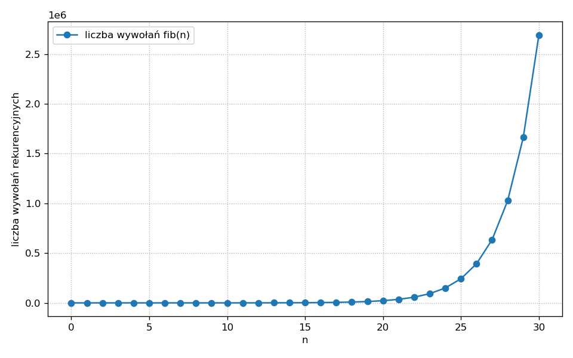
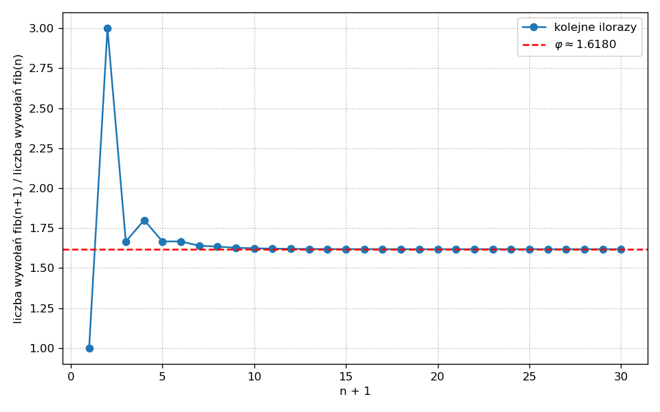

Rekurencja
Podstawy programowania (AD) 2
1 Literatura
Na temat rekurencji (i nie tylko) bardzo polecam wykłady CS1 z Berkeley: Composing Programs. Rekurencja omawiana jest tam m.in. tutaj i tutaj.
Warto też zajrzeć do legendarnego podręcznika SICP. Programy prezentowane są tam w języku Scheme.
2 Rekurencja
Funkcję nazywamy rekurencyjną, gdy wywołuje samą siebie. Wywołanie to może być bezpośrednie lub pośrednie. Implementacja rekurencji polega często na obserwacji, że rozwiązanie problemu dla pewnych szczególnych argumentów jest oczywiste, a dla argumentów ogólnych prosto wyraża się przez rozwiązanie tego samego problemu dla argumentów “prostszych”, znajdujących się w jakimś sensie “bliżej” przypadku oczywistego.
2.1 Przykład: suma kolejnych liczb naturalnych
Chcemy napisać funkcję suma_naturalnych(n) zwracającą sumę kolejnych liczb naturalnych od 1 do n:
\[ 1 + 2 + \ldots + n. \]
Przypadek szczególny to n == 0. Wtedy mamy sumę po zbiorze pustym, czyli 0. Nic nie trzeba liczyć, wynik jest oczywisty. Dla n przekraczających 0 mamy przypadek ogólny, o którym myślimy tak: gdyby suma dla argumentu n - 1 była już obliczona, to wynikiem byłaby wartość tej sumy powiększona o n. Inaczej mówiąc:
suma_naturalnych(0)zwraca0,suma_naturalnych(n)zwracan + suma_naturalnych(n - 1)dlan > 0.
Implementacja rekurencyjna:
Prześledźmy przebieg wywołania suma_naturalnych(5):
suma_naturalnych(5)
5 + suma_naturalnych(4)
5 + (4 + suma_naturalnych(3))
5 + (4 + (3 + suma_naturalnych(2)))
5 + (4 + (3 + (2 + suma_naturalnych(1))))
5 + (4 + (3 + (2 + (1 + suma_naturalnych(0)))))
5 + (4 + (3 + (2 + (1 + 0))))
5 + (4 + (3 + (2 + 1)))
5 + (4 + (3 + 3))
5 + (4 + 6)
5 + 10
15Zauważ, że ten “wybrzuszający się” łańcuch operacji musi być zapamiętywany. Powiemy, że funkcja suma_naturalnych() jest rekurencyjna oraz że jej wywołanie generuje proces rekurencyjny: buduje łańcuch odłożonych operacji, które muszą być zapamiętane. Im dłuższy proces, tym więcej operacji zostaje odłożonych.
2.2 Limit głębokości rekurencji
W Pythonie istnieje limit na liczbę odłożonych wywołań. Przekroczenie go skutkuje wyjątkiem RecursionError:
Nasza funkcja suma_naturalnych() nie ma zatem zbyt wielu zalet w porównaniu z implementacją za pomocą pętli: zajmuje pamięć (tym więcej, im większe n), a przy tym nie jest w stanie zwrócić wyniku dla niedużego przecież n równego 1000.
2.3 Rekurencja a pętla
Sumowanie zakodowane przy pomocy pętli while:
W pętli obsługujemy dwie zmienne: kroczącą sumę suma i dodawaną wartość k. Tak samo będzie z pętlą for, z tym że wtedy pętla sama zajmie się aktualizacją k:
Okazuje się, że rekurencja potrafi odwzorować zwykłą pętlę. Zmienne (być może liczne) przetwarzane w pętli przekazuje się kolejnym wywołaniom rekurencyjnym za pomocą argumentów:
Rekurencyjna jest funkcja sumuj(). Rozpiszmy przykładowy łańcuch wywołań:
suma_naturalnych(5)
sumuj(5, 0)
sumuj(4, 5)
sumuj(3, 9)
sumuj(2, 12)
sumuj(1, 14)
sumuj(0, 15)
15Tym razem nie ma łańcucha odłożonych operacji, proces się nie “wybrzusza”. Funkcja sumuj() jest rekurencyjna, ale implementuje proces iteracyjny: operacje dodawania wykonywane są od razu i zapamiętywane w dodatkowej zmiennej suma. Z tego punktu widzenia rekurencyjność sumuj() jest jedynie własnością składniową, samo wywołanie jest równoważne zwykłej pętli.
2.4 Rekurencja ogonowa
Mówimy, że wywołanie rekurencyjne jest w pozycji ogonowej, jeśli jest ostatnią operacją wykonywaną w danej ścieżce funkcji — wartość tego wywołania jest bezpośrednio zwracana, bez żadnych dalszych operacji czekających na jej wynik. Funkcję, w której wszystkie wywołania rekurencyjne są w pozycji ogonowej, nazywamy rekurencją ogonową.
W sumuj() ostatnia operacja w gałęzi rekurencyjnej to return sumuj(n - 1, n + suma) — wartość wywołania rekurencyjnego jest wprost zwracana. Dlatego sumuj() jest rekurencją ogonową.
Tymczasem w suma_naturalnych(n) w gałęzi rekurencyjnej mamy return n + suma_naturalnych(n - 1) — na wynik wywołania rekurencyjnego czeka jeszcze dodawanie n + …. Wywołanie nie jest zatem w pozycji ogonowej i funkcja nie jest rekurencją ogonową.
2.5 Optymalizacja wywołań ogonowych
Jeżeli środowisko uruchomieniowe “wie”, że wywołanie rekurencyjne jest w pozycji ogonowej, to może nie odkładać na stosie nowej ramki — po prostu podmienia zawartość bieżącej. Wywołanie sumuj(4, 5) nie musi być pamiętane, kiedy już działa sumuj(3, 9); po zakończeniu sumuj(3, 9) uruchamiane jest sumuj(2, 12), zatem ramkę po sumuj(3, 9) można bez szkody porzucić, itd.
Mówimy, że język programowania posiada optymalizację wywołań ogonowych (tail call optimization, TCO), jeśli potrafi wykonywać rekurencję ogonową bez wzrostu głębokości stosu. Python nie posiada takiej zdolności — i jest to świadoma decyzja projektowa Guido van Rossuma, który argumentował, że utrudniłaby ona czytelność stack trace’ów i diagnostykę błędów (zob. Tail Recursion Elimination na blogu Guido).
Mimo, że tworzenie łańcucha odłożonych operacji nie jest konieczne dla wywołania sumuj(), to i tak dla dużych n wywołanie to kończy się wyjątkiem RecursionError:
2.6 Jeszcze jeden przykład
Prosta pętla odliczająca:
i zastępująca ją rekurencja ogonowa:
2.7 Kiedy używać rekurencji?
Sprawne korzystanie z rekurencji wymaga praktyki. W wielu językach brak TCO powoduje, że rozwiązanie rekurencyjne jest mniej wydajne niż równoważna pętla; ponadto, niektóre języki bardziej wspierają idiom rekurencji, inne mniej. Korzystanie z pętli w Pythonie, zwłaszcza z pętli for po kolekcjach, jest bardzo naturalne i nie ma wielkiego sensu zastępowanie takiej pętli wymyślną rekurencją ogonową, która i tak nie zostanie zoptymalizowana. Z drugiej strony, w językach takich jak Lisp, jego dialekt Scheme czy Haskell nie ma w ogóle instrukcji sterujących odpowiadających zwykłym pętlom — zachowanie pętli implementowane jest rekurencją (ze wspieraną TCO) lub wykonywane niejawnie przez wywołania funkcyjne. W tych językach stosowanie rekurencji jest bardzo naturalne.
Rekurencja jest ogólniejsza od pętli, jednak rozwiązania wykorzystujące pętle uchodzą za łatwiejsze do zrozumienia. Zasada ta ma wiele wyjątków — zdarza się, że rozwiązanie rekurencyjne jest znacznie prostsze do znalezienia niż jakiekolwiek rozwiązanie iteracyjne. Przykładu dostarcza problem liczby podziałów liczby naturalnej, o którym możesz poczytać tutaj w Composing Programs.
Bardzo ważna metodyka projektowania algorytmów, dziel i zwyciężaj, dostarcza wielu przykładów problemów z wydajnymi rozwiązaniami rekurencyjnymi. Czołowe przykłady to wyszukiwanie binarne, sortowanie szybkie i sortowanie przez scalanie.
3 Rekurencja w ciągu Fibonacciego
3.1 Definicja i naiwna implementacja
Ciąg Fibonacciego matematycy definiują następująco:
\[ F_0 := 0,\quad F_1 := 1, \]
i dla \(n \geqslant 2\):
\[ F_n := F_{n-2} + F_{n-1}. \]
Definicja ta przekłada się wprost na funkcję obliczającą n-ty wyraz:
Łańcuch kolejnych wywołań i odłożonych operacji dla fib(5) ma postać:
fib(5)
fib(4) + fib(3)
(fib(3) + fib(2)) + fib(3)
((fib(2) + fib(1)) + fib(2)) + fib(3)
(((fib(1) + fib(0)) + fib(1)) + fib(2)) + fib(3)
(((1 + 0) + fib(1)) + fib(2)) + fib(3)
((1 + fib(1)) + fib(2)) + fib(3)
((1 + 1) + fib(2)) + fib(3)
(2 + fib(2)) + fib(3)
(2 + (fib(1) + fib(0))) + fib(3)
(2 + (1 + 0)) + fib(3)
(2 + 1) + fib(3)
3 + fib(3)
3 + (fib(2) + fib(1))
3 + ((fib(1) + fib(0)) + fib(1))
3 + ((1 + 0) + fib(1))
3 + (1 + fib(1))
3 + (1 + 1)
3 + 2
5Tutaj znajduje się przedstawienie ciągu wywołań dla fib(6) w postaci drzewa binarnego:

Co widzimy? Ta rekurencja nie jest ogonowa — generowany proces jest faktycznie rekurencyjny, i co więcej nie jest liniowy, lecz drzewiasty. Spodziewamy się, że już dla niewielkich n wywołania będą mało wydajne ze względu na liczbę powtórzeń pojawiających się w drzewie: dla fib(6) wartość fib(4) jest obliczana dwa razy, fib(3) trzy razy, itd.
3.2 Analiza czasu wykonania
Zbadajmy eksperymentalnie, jak czas wykonania fib(n) zależy od n. Do szybkich pomiarów użyjemy funkcji timeit() z modułu o tej samej nazwie:
>>> from timeit import timeit
>>> timeit(lambda: fib(10), number=1_000_000) / 1_000_000
6.117e-06
>>> timeit(lambda: fib(20), number=1_000) / 1_000
0.00078
>>> timeit(lambda: fib(30), number=10) / 10
0.093
>>> timeit(lambda: fib(37), number=1) / 1
2.70
>>> timeit(lambda: fib(41), number=1) / 1
19.08(Konkretne wartości oczywiście zależą od komputera.)
Dla fib(37) czas jest już rzędu kilku sekund, a dla fib(41) przekracza kwadrans. Dalej tym sposobem daleko nie zajedziemy.
Systematyczny pomiar zbiera skrypt src/fib_naive.py — mierzy średni czas wykonania fib(n) dla \(n = 10, 11, \ldots, 37\) i drukuje tabelę wyników:
# Path: src/fib_naive.py
"""
Naiwna, bezpośrednio rekurencyjna implementacja ciągu Fibonacciego
oraz pomiar średniego czasu wykonania fib(n) dla rosnących n.
Sposób użycia:
python fib_naive.py
"""
from timeit import timeit
def fib(n):
"""Zwraca F_n, n >= 0, ciągu Fibonacciego."""
if n < 2:
return n
return fib(n - 1) + fib(n - 2)
def zmierz_czasy(n_start=10, n_stop=37):
"""Zwraca listę par (n, średni czas wykonania fib(n))."""
wyniki = []
for n in range(n_start, n_stop + 1):
# Liczba powtórzeń maleje wraz ze wzrostem n, bo pojedyncze
# wywołanie robi się coraz wolniejsze.
if n < 25:
powtórzeń = 1_000
elif n < 33:
powtórzeń = 10
else:
powtórzeń = 1
czas = timeit(lambda: fib(n), number=powtórzeń) / powtórzeń
wyniki.append((n, czas))
return wyniki
def main():
print(f"{'n':>3} | {'F_n':>12} | {'średni czas [s]':>18}")
print("-" * 42)
for n, czas in zmierz_czasy():
print(f"{n:>3} | {fib(n):>12} | {czas:>18.6f}")
if __name__ == "__main__":
main()Wykres zebranych czasów:

A teraz spójrzmy na stosunek kolejnych czasów wykonania, \(T(n+1)/T(n)\):

Stosunki kolejnych czasów są w przybliżeniu stałe i dążą do wartości \[ \varphi = \tfrac{1 + \sqrt{5}}{2} \approx 1{,}618\ldots \] czyli złotej liczby.
Jeżeli kolejne ilorazy czasów są stałe, to sam ciąg czasów wykonania powinien być dobrze przybliżany przez ciąg geometryczny:
\[ T(n) \approx a \cdot \varphi^n \]
dla pewnej stałej \(a\). Wartość \(a\) można wyznaczyć metodą regresji liniowej, logarytmując obustronnie powyższe równanie. Tych szczegółów nie będziemy tu przepisywać — kod dopasowujący znajdziesz w skrypcie src/fib_analiza.py na GitHubie.
Zauważ, że związek czasu wykonania ze złotą liczbą nie jest przypadkiem (SICP, §1.2.2): \(F_n\) rośnie jak \(\varphi^n\), a my — jak się za chwilę przekonamy — wywołujemy fib() mniej więcej tyle razy, ile wynosi wartość samego \(F_n\).
Akceptując powyższe dopasowanie, możemy oszacować, ile czasu zajęłoby wykonanie fib(100). Ponieważ \(\varphi^{100} \approx 7{,}9 \cdot 10^{20}\), to nawet przy wyjściowym \(T(10)\) rzędu pojedynczych mikrosekund dostajemy
\[ T(100) \sim 10^{14} \text{ s} \approx 10^{7} \text{ lat}. \]
Zwróć uwagę, że mówimy tu o czasie. Wywołanie fib(n) jest bardzo czasochłonne, nie wymaga jednak dużej pamięci: lista odłożonych w danej chwili operacji jest taka jak głębokość drzewa, czyli proporcjonalna do n.
3.3 Liczba wywołań rekurencyjnych
Dokładniejsze wyniki uzyskamy, licząc wywołania rekurencyjne funkcji fib(). Z drzewa wyrysowanego wyżej odczytać można, że dla fib(6) mamy dokładnie 25 wywołań: 12 wywołań wewnątrz drzewa plus 13 liści (każdy liść to wywołanie fib(0) lub fib(1), które zwraca natychmiast).
A ile wywołań zrobi fib(35)? A fib(100)?
3.3.1 Atrybuty funkcji
Wielkość tę można obliczyć teoretycznie. My postąpimy praktycznie: zmusimy funkcję, aby sama pamiętała i aktualizowała liczbę swoich wywołań. Liczbę tę wygodnie będzie przechowywać jako atrybut funkcji.
W Pythonie funkcji (tak jak i większości obiektów) można dopisywać atrybuty. Po zdefiniowaniu funkcji o nazwie f możemy jej przypisać atrybut zgodnie ze składnią:
Atrybuty zdefiniowane przez użytkownika są przechowywane w atrybucie __dict__ w postaci słownika:
3.3.2 Dekorator zliczający wywołania
Napiszmy dekorator, który doda atrybut liczba_wywołań do zmodyfikowanej funkcji. Atrybut ten ustawiamy na zero, a przy każdym wywołaniu funkcji podnosimy o jeden:
Przetestujmy go na funkcji suma_naturalnych():
Sześć wywołań (n = 5, 4, 3, 2, 1, 0) — zgadza się.
3.3.3 Liczba wywołań naiwnego fib
Zastosujmy licz_wywołania do fib(). Kompletny skrypt:
# Path: src/fib_licznik.py
"""
Dekorator zliczający wywołania funkcji, zastosowany do naiwnej rekurencji
Fibonacciego.
Sposób użycia:
python fib_licznik.py
"""
from functools import wraps
def licz_wywołania(f):
"""Przechowuje liczbę wywołań f() w atrybucie licznik.liczba_wywołań."""
@wraps(f)
def licznik(*args, **kwargs):
licznik.liczba_wywołań += 1
return f(*args, **kwargs)
licznik.liczba_wywołań = 0
return licznik
@licz_wywołania
def fib(n):
"""Zwraca F_n, n >= 0, ciągu Fibonacciego."""
if n < 2:
return n
return fib(n - 1) + fib(n - 2)
def main():
print(f"{'n':>3} | {'F_n':>12} | {'liczba wywołań':>16}")
print("-" * 40)
for n in range(0, 31):
# Reset licznika przed każdym pomiarem.
fib.liczba_wywołań = 0
wartość = fib(n)
print(f"{n:>3} | {wartość:>12} | {fib.liczba_wywołań:>16}")
if __name__ == "__main__":
main()Wyniki są dokładne, więc małych wartości nie musimy pomijać. Wykres liczby wywołań:

Stosunek kolejnych liczb wywołań:

Znów widzimy zbieżność do \(\varphi\)! Nie jest to przypadek — można wykazać, że liczba wywołań \(T(n)\) funkcji fib() spełnia rekurencję \[
T(0) = T(1) = 1,\qquad T(n) = T(n-1) + T(n-2) + 1,
\] skąd \(T(n) = 2 F_{n+1} - 1\). Zatem — podobnie jak ciąg Fibonacciego — liczba wywołań rośnie jak \(\varphi^n\).
Dla fib(30) liczba wywołań wynosi \(T(30) = 2 F_{31} - 1 = 2\,692\,537\). Dla fib(100) dostajemy:
\[ T(100) = 2 F_{101} - 1 \approx 7{,}3 \cdot 10^{20}. \]
Ponad siedemset trylionów wywołań — i to właśnie dlatego naiwny fib(100) byłby niewykonalny za naszego życia.
4 Ratowanie definicji rekurencyjnej — memoizacja
Skąd bierze się ta katastrofa wydajności? W bezpośredniej implementacji definicji rekurencyjnej funkcja fib() jest wywoływana wielokrotnie na tych samych argumentach: fib(30) oblicza fib(28) dwa razy, fib(27) trzy razy, fib(0) — aż \(F_{30} = 832\,040\) razy.
Kłopot ten rozwiążemy, zapamiętując wyniki pośrednie. Ta technika nazywa się memoizacją.
4.1 Słownik pamięci w domknięciu
Najprostsza idea: wewnątrz fib() trzymamy słownik pamięć mapujący argumenty na obliczone wcześniej wartości. Zanim zaczniemy liczyć, sprawdzamy, czy wynik już jest w pamięci. Słownik umieścimy jako zmienną swobodną w domknięciu — nie chcemy, żeby zaśmiecał globalną przestrzeń nazw:
Wynik dla fib(100) otrzymujemy w ułamku sekundy zamiast w dziesiątkach milionów lat.
4.2 Dekorator zapamiętujący
Konstrukcję z pamięcią w domknięciu można wygodnie przełożyć na dekorator stosowalny do dowolnej funkcji jednej zmiennej:
Dzięki dekoratorowi zachowujemy czytelność definicji rekurencyjnej:
Dekoratory można spiętrzać, by jednocześnie mieć zapamiętywanie i licznik wywołań:
199 wywołań zamiast \(7{,}3 \cdot 10^{20}\) — różnica rzędu stu trylionów.
4.3 functools.lru_cache i functools.cache
Memoizacja jest na tyle częstym wzorcem, że standardowa biblioteka Pythona zawiera gotowe dekoratory: functools.lru_cache oraz — od Pythona 3.9 — prostszy functools.cache.
lru_cache przyjmuje argumenty (np. maxsize=None oznacza cache bez limitu rozmiaru — LRU wypada wtedy z gry, bo nic nie jest usuwane). Dlatego piszemy go z nawiasami okrągłymi, nawet gdy nie podajemy żadnych argumentów: @lru_cache(). Od Pythona 3.9 wariant bez limitu ma osobną, krótszą nazwę @cache:
Porównanie czasu działania obu wariantów znajdziesz w skrypcie:
# Path: src/fib_memo.py
"""
Memoizacja naiwnej rekurencji Fibonacciego:
- własny dekorator zapamiętujący (słownik w domknięciu),
- functools.lru_cache.
Sposób użycia:
python fib_memo.py
"""
from functools import wraps, lru_cache
from timeit import timeit
def zapamiętuj(f):
"""Dekorator zapamiętujący wyniki funkcji jednej zmiennej."""
pamięć = {}
@wraps(f)
def wrapper(x):
if x not in pamięć:
pamięć[x] = f(x)
return pamięć[x]
return wrapper
@zapamiętuj
def fib_memo(n):
"""Wersja fib() z zapamiętywaniem (własny dekorator)."""
if n < 2:
return n
return fib_memo(n - 1) + fib_memo(n - 2)
@lru_cache(maxsize=None)
def fib_lru(n):
"""Wersja fib() z zapamiętywaniem przez functools.lru_cache."""
if n < 2:
return n
return fib_lru(n - 1) + fib_lru(n - 2)
def main():
# Rozgrzewka — pierwsze wywołanie napełnia cache.
fib_memo(100)
fib_lru(100)
for n in (30, 100, 500):
t_memo = timeit(lambda: fib_memo(n), number=100_000) / 100_000
t_lru = timeit(lambda: fib_lru(n), number=100_000) / 100_000
print(f"n = {n:>3} fib_memo: {t_memo:.2e} s fib_lru: {t_lru:.2e} s")
if __name__ == "__main__":
main()Zwykle lru_cache wypada minimalnie szybciej od własnego dekoratora zapamiętuj — jest napisany w C.
5 Ćwiczenia
Napisz rekurencyjną funkcję silnia(n) obliczającą \(n!\). Następnie napisz jej wariant ogonowy silnia_ogon(n, akumulator=1). Porównaj przebieg obu funkcji dla \(n = 5\).
Przebieg silnia(5) buduje łańcuch odłożonych mnożeń:
silnia(5)
5 * silnia(4)
5 * (4 * silnia(3))
...Przebieg silnia_ogon(5) jest liniowy — każde wywołanie ma wszystko co potrzebne w argumentach:
silnia_ogon(5, 1)
silnia_ogon(4, 5)
silnia_ogon(3, 20)
silnia_ogon(2, 60)
silnia_ogon(1, 120)
silnia_ogon(0, 120)
120Napisz rekurencyjną funkcję potęga(a, n) obliczającą \(a^n\) dla nieujemnego całkowitego \(n\), robiącą \(O(\log n)\) wywołań rekurencyjnych. Wskazówka: zauważ, że \(a^n = (a^{n/2})^2\) dla parzystego \(n\), a \(a^n = a \cdot a^{n-1}\) dla nieparzystego.
Istotne jest zapamiętanie pośredniego wyniku w zmiennej połowa — bez tego rozgałęzilibyśmy rekurencję na dwa jednakowe wywołania i stracilibyśmy logarytmiczną złożoność.
Udekoruj funkcję potęga() z poprzedniego ćwiczenia dekoratorem licz_wywołania i sprawdź, ile wywołań rekurencyjnych wykonuje się dla \(n = 1000\). Czy liczba ta rzeczywiście skaluje się jak \(\log_2 n\)?
Napisz funkcję hanoi(n, z, przez, na), która drukuje kolejne ruchy przenoszące \(n\) krążków z kołka z na kołek na, używając kołka przez jako pomocniczego. Ile ruchów wykonuje się dla \(n\) krążków?
Przykład wywołania hanoi(3, 'A', 'B', 'C'):
Przenieś krążek 1 z A na C
Przenieś krążek 2 z A na B
Przenieś krążek 1 z C na B
Przenieś krążek 3 z A na C
Przenieś krążek 1 z B na A
Przenieś krążek 2 z B na C
Przenieś krążek 1 z A na C>>> def hanoi(n, z, przez, na):
... if n == 0:
... return
... hanoi(n - 1, z, na, przez)
... print(f"Przenieś krążek {n} z {z} na {na}")
... hanoi(n - 1, przez, z, na)
>>> hanoi(3, 'A', 'B', 'C')
Przenieś krążek 1 z A na C
Przenieś krążek 2 z A na B
Przenieś krążek 1 z C na B
Przenieś krążek 3 z A na C
Przenieś krążek 1 z B na A
Przenieś krążek 2 z B na C
Przenieś krążek 1 z A na CLiczba ruchów spełnia rekurencję \(H(n) = 2 H(n-1) + 1\) z \(H(0) = 0\), skąd \(H(n) = 2^n - 1\).
6 Podsumowanie
Na tym wykładzie zobaczyliśmy, że:
- Funkcja jest rekurencyjna, gdy wywołuje samą siebie. Jej wywołanie może generować proces rekurencyjny (łańcuch odłożonych operacji) lub proces iteracyjny (brak odłożonych operacji, stany przekazywane w argumentach).
- Rekurencja ogonowa to funkcja rekurencyjna, w której wywołanie rekurencyjne jest ostatnią operacją w każdej ścieżce. Języki wspierające optymalizację wywołań ogonowych potrafią ją wykonywać bez wzrostu głębokości stosu. Python świadomie jej nie wspiera.
- Naiwna rekurencyjna implementacja ciągu Fibonacciego daje proces drzewiasty, którego liczba wywołań rośnie jak \(\varphi^n\). Dla
fib(100)mówimy o setkach trylionów wywołań — w praktyce niewykonalne. - Memoizacja — zapamiętywanie wyników pośrednich w słowniku — redukuje liczbę wywołań do \(O(n)\) i pozwala obliczyć
fib(100)w ułamku sekundy. Standardowa biblioteka udostępnia ją gotową w postaci dekoratorówfunctools.lru_cacheifunctools.cache. - Atrybuty można dopinać do dowolnego obiektu funkcji; wykorzystaliśmy to w dekoratorze
licz_wywołaniatrzymającym licznik bezpośrednio na zdekorowanej funkcji.
Rekurencja jest narzędziem ogólniejszym od pętli i często pozwala opisać problem zwięźlej. W języku takim jak Python za czytelność trzeba jednak zapłacić — brakiem optymalizacji ogonowej oraz ograniczeniami na głębokość stosu. W kolejnych tematach wrócimy do tego narzędzia przy okazji omawiania struktur danych o rekurencyjnej budowie.